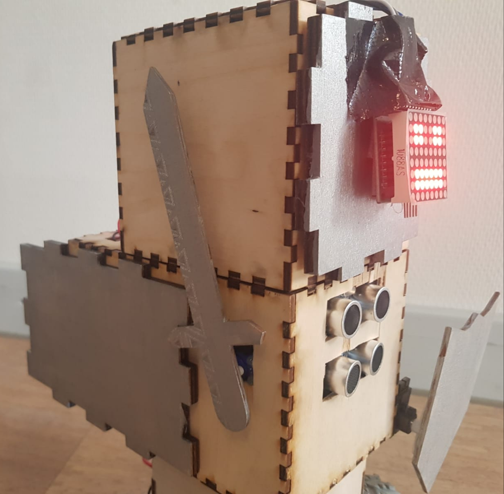
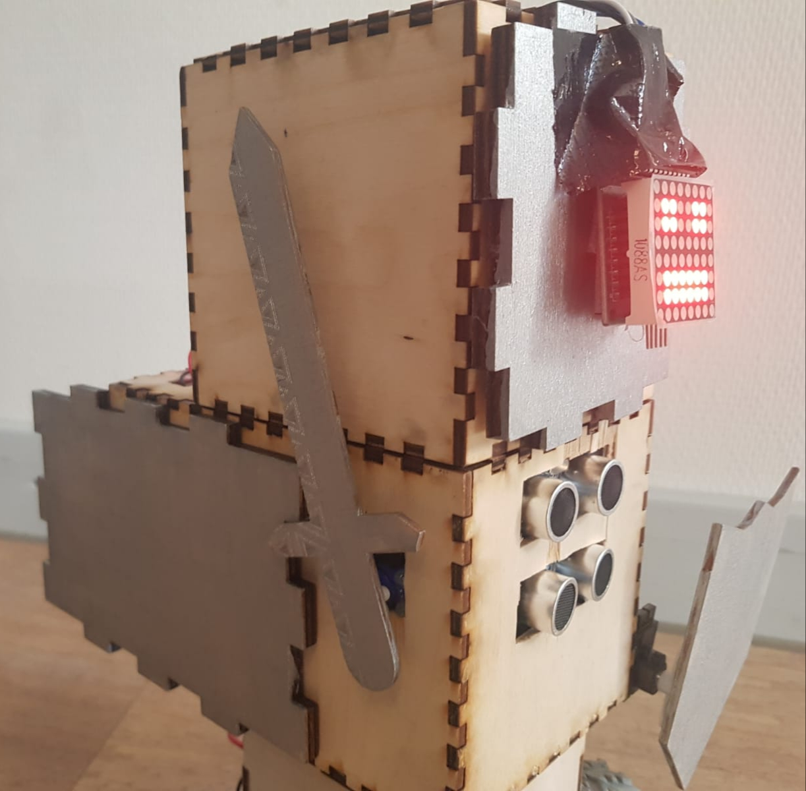

De Gladiatorbot is half gladiator en half robot, hierdoor heeft ze zowel strijdlust als technische voordelen. Haar gezichtsuitdrukking veranderd bij elke aanval of verdediging, dit maakt haar angstaanjagend. Haar grootste droom is om het toernooi te winnen en een beroemde strijder te worden. Gladys is gemaakt door: Chris, Lucas, Danny en Inci.
Wie is Gladys?
De ultra-soundsensoren
De ultra-sound sensoren, zitten aan de voorkant. Deze detecteren wanneer de tegenstander dichtbij is en zetten dan de aanval en verdediging in. De aanval bestaat uit een dodelijke zwaai van het zwaard en de verdeging bestaat uit een schild die de borst van Gladys beschermt tegen een aanval. Dit maakt Gladys onverwoestbaar en levensgevaarlijk.
 

De bewegingssensor
Ondanks dat Gladys onverslaanbaar is, moeten we rekening houden met eventuele rake klappen, hiervoor hebben we de bewegingssensor. Als Gladys een harde klap krijgt, wordt dit gevoeld door de sensor. Er gaat dan een alarm af, zodat wij weten dat we op moeten passen en wellicht moeten terugtrekken. Daarnaast heeft de sensor heel veel kleurtjes, wat zorgt voor een sierlijk achterste, zoals elke vrouw dat graag heeft.


De lichtsensor
Nog een 'voor de zekerheid' maatregel die we genomen hebben heeft te maken met de lichtsensor. De lichtsensor zit onderaan Gladys, hierdoor vangt het dus geen licht, tenzij Gladys omvalt. Wanneer dit gebeurt, gaat er, net als bij de bewegingssensor, een alarm af. Dit alarm zorgt ervoor dat wij haar zo snel mogelijk weer recht kunnen zetten. Zo blijft ze met vier wielen op de grond ten alle tijden.

Verzin je eigen robotnaam
Maak alle vinkjes groen voor de aller beste robot naam!
Bevat kleine letters
Bevat hoofdletters
Bevat getallen
Minimaal 8 karakters